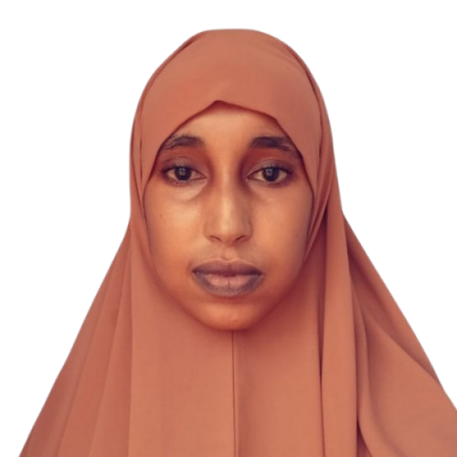
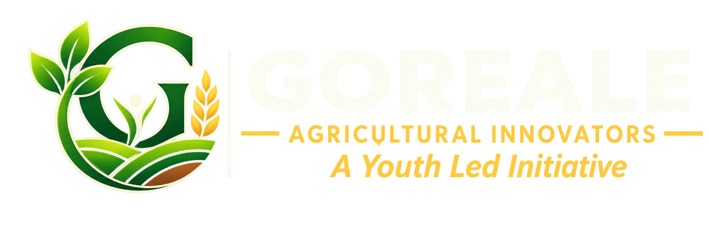
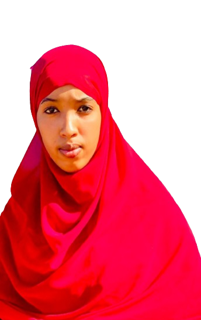
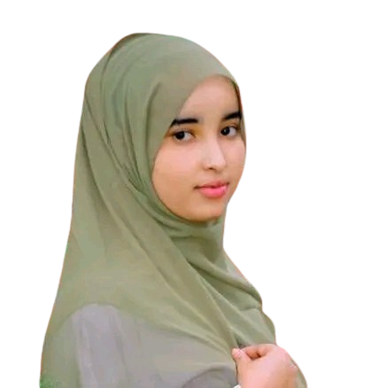
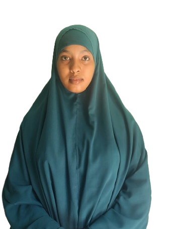

Samira Abdirahman Maalim
ChairpersonProvides leadership, chairs meetings and supports the strategic direction and accountability of the organisation.

Meet the governing body, leadership, members and programme teams contributing to sustainable agriculture, innovation and community development at GOREALE Agricultural Innovators.
GOREALE Agricultural Innovators recognises that meaningful agricultural transformation begins with people. Our initiative brings together members, community representatives, agricultural practitioners and development-minded individuals who share an interest in building sustainable agricultural systems.
Through accountable leadership, active membership, local participation, knowledge exchange and partnerships, we seek to strengthen agricultural innovation and create opportunities for communities in Goreale Ward and beyond.
Our organisational structure provides a framework for member participation, leadership, accountability and effective coordination of the initiative.
Registered members exercising the decision-making powers provided for in the CBO Constitution.
Elected office bearers responsible for organisational governance, oversight and accountability.
Leadership and oversight
Leadership support and delegated duties
Records and official communication
Secretarial support
Financial records and accountability
Coordinate and support approved agricultural, environmental, innovation and community activities.
Contribute knowledge, skills, ideas and participation towards the initiative's objectives.
The individuals entrusted with leadership and governance responsibilities help guide the organisation in accordance with its constitution and member decisions.

Provides leadership, chairs meetings and supports the strategic direction and accountability of the organisation.
Supports the Chairperson and performs delegated leadership responsibilities in accordance with the constitution.

Coordinates official records, meeting documentation, correspondence and organisational communication.

Supports secretarial duties and assists with records, communication and organisational documentation.

Supports financial record keeping, financial reporting and responsible management of organisational funds.
Provides leadership, chairs meetings and supports the strategic direction and accountability of the organisation.
Our work is guided by shared principles that support responsible leadership, community participation and sustainable development.
We value teamwork, partnerships and knowledge sharing to develop practical agricultural solutions.
We encourage local involvement and recognise the importance of community knowledge and experience.
We welcome creative ideas and appropriate technologies that respond to agricultural challenges.
We value honesty, accountability, transparency and responsible use of resources.
We support meaningful participation by youth, women and different community groups.
We promote approaches that protect natural resources and strengthen long-term resilience.
Our programme teams support the implementation of approved activities and translate organisational objectives into practical community initiatives.
Supports sustainable crop production, livestock development, climate-smart agriculture and agricultural knowledge sharing.
Encourages practical solutions, agricultural research, learning and appropriate technologies for local farming systems.
Promotes afforestation, agroforestry, biodiversity protection, soil conservation and responsible water management.
Supports community participation, outreach, youth and women's involvement, and local knowledge exchange.
Supports programme coordination, communication, administration and partnership development.
Encourages local initiatives, skills development, inclusive participation and community resilience.
GOREALE Agricultural Innovators is built on the participation and commitment of its members. Members contribute to the organisation's direction through the decision-making processes established in its constitution.
Farmers, young people, women, agricultural practitioners, researchers, institutions and community groups also have important roles in advancing sustainable agriculture and community development.
Are you passionate about sustainable agriculture, community development, environmental conservation or agricultural innovation? We welcome individuals and organisations interested in contributing to our mission.
Collaborate With Us →